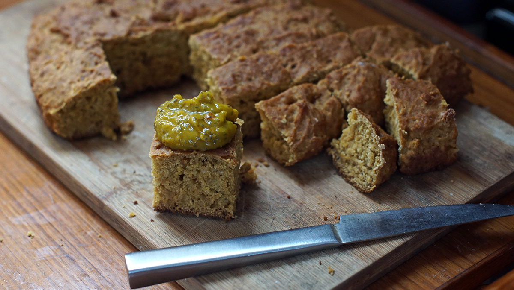

pandanus fruit bread
20 pieces — 40 minutes
We arrived in the Marshall Islands 3 weeks ago. We are settled in, but one thing remains difficult for us: finding fresh produce. The vegetables in Majuro are imported from either Guam, or Hawaii by cargo ship, and because they spend much time at sea they are frozen. Freezing fresh whole vegetables is never a good idea, the vegetables rot before they make it onto the shelves. When possible, we opt for local produce. Majuro has few native fresh vegetables, but they do have some fruit and among these is the pandanus fruit.
Pandanus, or Pandanus tectorius, bears a fruit that look like a giant pinecone, it is made up of little wedge-like phalanges, commonly referred to as 'keys'. Each fruit has about 40-80 keys, the part of the keys that is attached to the core is soft, and a bright orange colour. In the Marshall Islands, people suck on the orange part which is sweet and tastes of cane sugar. The soft part can also be cut, and processed into juice. It is possible to make the juice yourself, this blog post explains the process at length.
I don't have the space, nor the tools to prepare pandanus juice, but a store in Majuro sells frozen purée. This is what I used to prepare this pandanus fruit cake and the topping that goes with it. What does it taste like? It is similar to mango, sweet, but also bitter.
I bought a generous portion of frozen pandanus purée, and couldn't use most of it in the bread so I used the rest to make a topping. The chia seeds don't act as a thickener and can be omitted, but they add nutritional value to the meal.
If you ever come across some pandanus fruit, please try it! Making pandanus juice from scratch requires some muscle and serious dedication, but in places where it grows, chances are you'll also find a 'processed' version.
Pandanus Tectorius photo credit: U. S. Geological Survey, USGS /Forest & Kim Starr.
 soy milk60 ml
soy milk60 ml apple cider vinegar2.5 ml
apple cider vinegar2.5 ml all purpose flour180 g
all purpose flour180 g spelt flour50 g
spelt flour50 g baking powder5 g
baking powder5 g baking soda1.25 g
baking soda1.25 g salt2.5 g
salt2.5 g canola oil60 ml
canola oil60 ml whole cane sugar100 g
whole cane sugar100 g pandanus fruit350 ml
pandanus fruit350 ml
pandanus bread
- Preheat oven to 180 °C (350 °F).
- Mix 2.5 ml (1/2 tsp) of apple cider vinegar in 60 ml (1/4 cup) of soy milk, this will make the milk curdle.
- In a bowl, combine 180 g (1 1/2 cup) of all purpose flour, 50 g (1/2 cup) of spelt flour, 5 ml (1 tsp) of baking powder, 2.5 ml (1/2 tsp) of baking soda and 1.25 g (1/4 tsp) of salt. Mix well.
- In yet, another bowl, cream 60 ml (1/4 cup) of canola oil with 100 g (1/2 cup) of whole cane sugar. Stir in 350 ml of pandanus puree and the curdled soy milk mixture.
- Add the wet to the dry ingredients and stir until evenly mixed.
- Pour the batter into an oiled square baking pan.
- Bake for 45 minutes.
- pandanus fruit250 ml
 chili pepper flakes5 g
chili pepper flakes5 g- whole cane sugar30 g
 chia seeds30 g
chia seeds30 g
topping
- In a saucepan, add 250 ml (1 cup) of puréed pandanus (add some water if too thick), 5 g (1 tsp) of chili flakes and 30 g (2 tsp) of whole cane sugar. Stir well and bring to a boil.
- Reduce heat, cook for 5 minutes, then remove from heat.
- When cool, stir in 30 g (2 tbsp) of chia seeds.
- Serve with the pandanus bread!